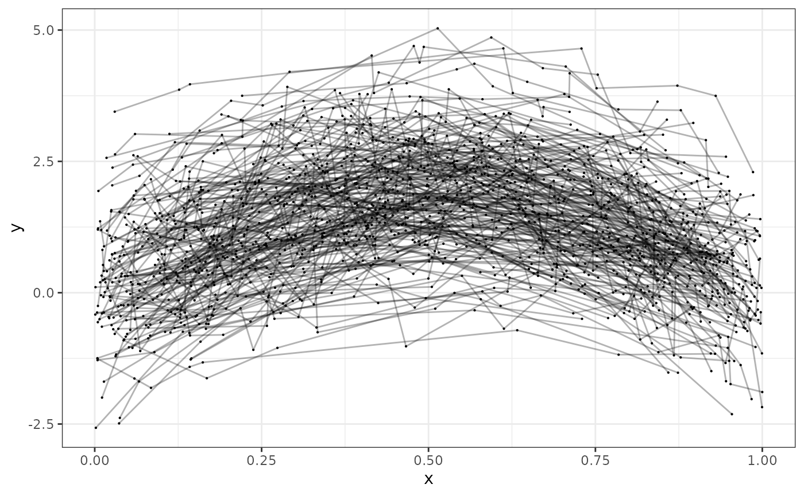

This vignette describes how to use galamm to estimate latent variable models with smooth terms. The examples are based on Section 4 and 5 in Sørensen, Fjell, and Walhovd (2023), but as we cannot share the data, we have instead simulated somewhat simpler datasets that will be used. We will gradually add complexity, starting with a simple generalized additive mixed.
Generalized Additive Mixed Models
Gaussian Responses
The cognition dataset contains simulated data with
measurements of abilities in three cognitive domains.
head(cognition)
#> id domain x timepoint item trials y
#> 1 1 1 0.1457912 1 1 1 0.49132612
#> 2 1 1 0.1457912 1 2 1 0.67917855
#> 3 1 1 0.1457912 1 3 1 -0.01864935
#> 4 1 1 0.1953280 2 1 1 0.86089677
#> 5 1 1 0.1953280 2 2 1 1.48573231
#> 6 1 1 0.1953280 2 3 1 0.46781198For this first example, we focus only on the first item measured for the first domain.
dat <- subset(cognition, domain == 1 & item == 1)Each subject in this dataset has been measured eight times, and we can plot the measurements as follows:
ggplot(dat, aes(x = x, y = y, group = id)) +
geom_point(size = .1) +
geom_line(alpha = .3)
We use a generalized additive mixed model with random intercepts per subject to estimate the function relating \(x\) to \(y\). In terms of the model framework outlined in the introductory vignette, we model the \(i\)th response from the \(j\)th subject with
\[ y_{ij} = f(x_{ij}) + \eta_{j} + \epsilon_{ij} \]
where \(f(x_{ij})\) is a smooth function to be estimated, \(\eta_{j} \sim N(0, \psi)\) is a random intercept, and \(\epsilon_{ij} \sim N(0, \phi)\) is a residual term.
This model can be estimated using gamm4 as follows:
The resulting estimated smooth term looks sensible.
summary(mod_gamm4$mer)
#> Linear mixed model fit by maximum likelihood ['lmerMod']
#>
#> AIC BIC logLik deviance df.resid
#> 3166.0 3192.9 -1578.0 3156.0 1595
#>
#> Scaled residuals:
#> Min 1Q Median 3Q Max
#> -2.9092 -0.5972 -0.0113 0.6094 3.3454
#>
#> Random effects:
#> Groups Name Variance Std.Dev.
#> id (Intercept) 0.8744 0.9351
#> Xr s(x) 2.1441 1.4643
#> Residual 0.2756 0.5250
#> Number of obs: 1600, groups: id, 200; Xr, 8
#>
#> Fixed effects:
#> Estimate Std. Error t value
#> X(Intercept) 1.25075 0.06741 18.55
#> Xs(x)Fx1 0.03334 0.20783 0.16
#>
#> Correlation of Fixed Effects:
#> X(Int)
#> Xs(x)Fx1 0.000
plot(mod_gamm4$gam)With galamm we use similar argument, but the random
specification is now part of the model formula.
And the summary is very similar.
summary(mod)
#> Generalized additive latent and mixed model fit by maximum marginal likelihood.
#> Formula: y ~ s(x) + (1 | id)
#> Data: dat
#>
#> AIC BIC logLik deviance df.resid
#> 3166.0 3192.9 -1578.0 3156.0 1595
#>
#> Scaled residuals:
#> Min 1Q Median 3Q Max
#> -2.9092 -0.5972 -0.0113 0.6094 3.3454
#>
#> Random effects:
#> Groups Name Variance Std.Dev.
#> id (Intercept) 0.8744 0.9351
#> Xr s(x) 2.1440 1.4642
#> Residual 0.2757 0.5250
#> Number of obs: 1600, groups: id, 200; Xr, 8
#>
#> Fixed effects:
#> Estimate Std. Error t value Pr(>|t|)
#> (Intercept) 1.25074 0.06741 18.5543 7.527e-77
#> s(x)Fx1 0.03339 0.20805 0.1605 8.725e-01However, the plot function now gives us a diagnostic
plot, which looks very good.
plot(mod)Binomial Responses
In the cognition dataset, the responses relating to domain 2 and 3 are binomially distributed. We will use the first trial of the third domain to illustrate how such data can be modeled.
dat <- subset(cognition, domain == 3 & item == 1)Each observation counts the number of successes in ten trials.
plot(dat$x, dat$y, xlab = "x", ylab = "Correct responses")Again we can fit this model using gamm4.
mod_gamm4 <- gamm4(cbind(y, trials - y) ~ s(x),
random = ~ (1 | id),
data = dat, family = binomial
)
summary(mod_gamm4$mer)
#> Generalized linear mixed model fit by maximum likelihood (Laplace
#> Approximation) [glmerMod]
#> Family: binomial ( logit )
#>
#> AIC BIC logLik deviance df.resid
#> 3464.2 3485.7 -1728.1 3456.2 1596
#>
#> Scaled residuals:
#> Min 1Q Median 3Q Max
#> -5.0238 -0.1789 0.0750 0.4958 3.7142
#>
#> Random effects:
#> Groups Name Variance Std.Dev.
#> id (Intercept) 1.142 1.068
#> Xr s(x) 1008.046 31.750
#> Number of obs: 1600, groups: id, 200; Xr, 8
#>
#> Fixed effects:
#> Estimate Std. Error z value Pr(>|z|)
#> X(Intercept) 3.8851 0.2265 17.15 < 2e-16 ***
#> Xs(x)Fx1 4.5510 0.7328 6.21 5.28e-10 ***
#> ---
#> Signif. codes: 0 '***' 0.001 '**' 0.01 '*' 0.05 '.' 0.1 ' ' 1
#>
#> Correlation of Fixed Effects:
#> X(Int)
#> Xs(x)Fx1 -0.456
plot(mod_gamm4$gam)The following code estimates the modeling using galamm instead.
The estimates are very similar, although not identical. The
difference in deviance is due to differences in the way deviance is
defined. The call deviance(mod_gamm4$mer) gives the same
value as in the summary for the model fitted with galamm.
summary(mod)
#> Generalized additive latent and mixed model fit by maximum marginal likelihood.
#> Formula: cbind(y, trials - y) ~ s(x) + (1 | id)
#> Data: dat
#>
#> AIC BIC logLik deviance df.resid
#> 3464.2 3485.7 -1728.1 1144.4 1596
#>
#> Scaled residuals:
#> Min 1Q Median 3Q Max
#> -0.8 17.6 39.4 157.7 5409.6
#>
#> Random effects:
#> Groups Name Variance Std.Dev.
#> id (Intercept) 1.142 1.069
#> Xr s(x) 1003.317 31.675
#> Number of obs: 1600, groups: id, 200; Xr, 8
#>
#> Fixed effects:
#> Estimate Std. Error z value Pr(>|z|)
#> (Intercept) 3.883 0.2300 16.881 6.174e-64
#> s(x)Fx1 4.559 0.7481 6.094 1.102e-09Generalized Additive Models with Factor Structures
We now add factor structures to the GAMMs. These are types of models that neither gamm4 nor mgcv are able to estimate, and where galamm provides new functionality.
Gaussian Responses
We continue with the cognition data, but now use all items of cognitive domain 1. These are all conditionally normal distributed.
dat <- subset(cognition, domain == 1)
dat$item <- factor(dat$item)
head(dat)
#> id domain x timepoint item trials y
#> 1 1 1 0.1457912 1 1 1 0.49132612
#> 2 1 1 0.1457912 1 2 1 0.67917855
#> 3 1 1 0.1457912 1 3 1 -0.01864935
#> 4 1 1 0.1953280 2 1 1 0.86089677
#> 5 1 1 0.1953280 2 2 1 1.48573231
#> 6 1 1 0.1953280 2 3 1 0.46781198We now need a factor model to associate the underlying latent trait \(\eta\) with the measurements \(y_{i}\):
\[ y_{i} = \beta_{i} + \lambda_{i} \eta + \epsilon_{i} \]
In the structural model, we have a smooth term for the relationship between the latent trait and x, and we have random intercepts for a given timepoint within subject \(\zeta^{(2)}\), and for a given subject across timepoints \(\zeta^{(3)}\).
\[ \eta = h(x) + \zeta^{(2)} + \zeta^{(3)}. \]
The reduced form of the model is
\[ y_{i} = \beta_{i} + \lambda_{i} \left\{ h(x) + \zeta^{(2)} + \zeta^{(3)} \right\} + \epsilon_{i} \]
We fit the model as follows.
mod <- galamm(
formula = y ~ 0 + item + s(x, by = loading) + (0 + loading | id / timepoint),
data = dat,
load.var = "item",
lambda = list(matrix(c(1, NA, NA), ncol = 1)),
factor = list("loading")
)The factor loadings are very well recovered. When simulating the
data, the standard deviation at the id level was 1, at the
timepoint level it was 0.5, and the residual standard
deviation was 0.1. The estimates are close to these values.
summary(mod)
#> Generalized additive latent and mixed model fit by maximum marginal likelihood.
#> Formula: y ~ 0 + item + s(x, by = loading) + (0 + loading | id/timepoint)
#> Data: dat
#>
#> AIC BIC logLik deviance df.resid
#> -777.1 -712.3 398.5 -797.1 4790
#>
#> Scaled residuals:
#> Min 1Q Median 3Q Max
#> 8.573 17.079 52.697 64.954 83.643
#>
#> Lambda:
#> loading SE
#> lambda1 1.0000 .
#> lambda2 1.4004 0.003441
#> lambda3 0.3003 0.002088
#>
#> Random effects:
#> Groups Name Variance Std.Dev.
#> timepoint:id loading 0.266010 0.51576
#> id loading 0.877356 0.93667
#> Xr s(x):loading 2.072054 1.43946
#> Residual 0.009845 0.09922
#> Number of obs: 4800, groups: timepoint:id, 1600; id, 200; Xr, 8
#>
#> Fixed effects:
#> Estimate Std. Error t value Pr(>|t|)
#> item1 1.25075 0.06752 18.52360 1.332e-76
#> item2 1.75502 0.09453 18.56640 6.010e-77
#> item3 0.37909 0.02041 18.57146 5.470e-77
#> s(x):loadingFx1 0.02038 0.20527 0.09927 9.209e-01Binomial Responses
We can now move on to the part of the cognition data that is conditionally binomially distributed. We begin with domain 2, for which each response measures success or not in is a single trial. In this case there are only two items, so we must change the lambda matrix accordingly.
dat <- subset(cognition, domain == 2)
dat$item <- factor(dat$item)
mod <- galamm(
formula = y ~ 0 + item + s(x, by = loading) + (0 + loading | id / timepoint),
data = dat,
family = binomial,
load.var = "item",
lambda = list(matrix(c(1, NA), ncol = 1)),
factor = list("loading")
)The factor loading \(\lambda_{2} = 2\) was used when simulating the data, and including the uncertainty, our estimate covers the true value well.
factor_loadings(mod)
#> loading SE
#> lambda1 1.000000 NA
#> lambda2 1.794194 0.2698327
confint(mod, "lambda")
#> 2.5 % 97.5 %
#> lambda1 1.265332 2.323057